孖仔帮
与您分享双胞胎育儿路上的囧人囧事
点击蓝字
关注我们
文|圆圈妈
背景: 圆圈3岁2个月
地点：湖南·郴州·东江湖
人物：双胞胎兄弟圆圆&圈圈，圆圈爸和圆圈妈
01
圆圈在幼儿园的第二周，我们又逃课了。
为了避免堵在京港澳高速上生不如死，我们决定在中秋假期前两天，逃离广东境内。
9月20日，出发郴州东江湖，带着双胞胎圆圈兄弟去看山看水看雾。
其实出发前一天就在莽山公园和东江湖之间纠结。很庆幸选择了后者，果然不枉此行。
接下里孖仔帮与您分享东江湖的亲子游攻略（此攻略适合自驾游且时间较充裕的游客）
先简单介绍下东江湖，东江湖位于湖南省郴州市东北部的资兴市境内，是国家级风景名胜区，国家AAAAA级旅游区 。
东江湖纯净浩瀚，湖面面积160平方公里，碧波万顷，景象万千，其水质达到了国家一级饮用水标准。境内主要景观有：雾漫小东江、东江大坝、龙景峡谷、兜率灵岩、东江漂流、游客可乘坐仿古画舫、豪华游艇游湖。
东江湖有4个线路项目，我们走的是大众化的精品路线2，包含景点如下：小东江+龙景峡谷+东江湖+兜率灵岩溶洞。
走这个线路基本上可以看到东江湖的所有精华景点。
这篇东江湖亲子游攻略将围绕精品路线2做史上最详尽的讲解，国庆黄金周有打算去的游客可以参考下圆圈妈这篇攻略哦！
02
费用
执行票价170元，我们在某宝购买到优惠票155元/成人票，费用包含景区门票+旅游专线车往返+旅游专线船往返。
TIPS：门票记得一定要随身带好，不要丢了，景区较分散，均需要独立验票。
切记！切记！
住宿
东江湖的配套设施比较完善，景区外50米远就有大大小小的酒店客栈宾馆民宿，不愁找不到住的地方，价格在150—300元之间。
TIPS：景区附近的住宿环境较普通，没有星级待遇可言，如果对住宿高要求的，还是要花点心思找找别的。
为了方便早起看雾，我们就住在景区外100米远的酒店，与其说是酒店，不如说是民宿，更贴切点。为了避免广告嫌疑，就不透露民宿名称了。
这个民宿比较便宜，117一晚，房间装修普通，配套设施一般，还好我们对住宿没啥特别要求，只要有床就行！
吃饭
各大酒店客栈之间都夹着大大小小的餐馆饭店，店小二都会走在大街上热情地揽客。即便是一大早起床去看雾，也有早餐店开门营业，完全不用愁找不到吃的。
TIPS：需要早起（景区最早班车是5点50分）看雾的游客，如果不想把时间浪费在早餐店上，最好自备些干粮在旅游车上吃。
我们早晨5点50分出门，天才蒙蒙亮，因为一心想看雾，早餐都懒得吃就直奔景区售票点。
03
第一站：雾漫小东江
景区5点50分就有旅游专线车开往看雾观景台。不用担心起的太早，就怕你起不来！
看雾观景台有2号，3号，4号。
旅游专线车会在每个观景台停靠，方便每个游客根据需求上下车。
我们6点15分在景区售票窗口兑换到纸质票，赶往游客中心，正好赶上了第二趟车，约8分钟左右就到了2号观景台，游客几乎都是在2号观景台下车的。
今天既不是周六日也不是节假日，游客较少，而且老年人居多，还有稀稀拉拉的几个小旅行团。
像我们这种小两口带着孩子的，实在太突兀了，圆圈兄弟穿着一模一样的衣服，格外显眼。
在2号观景台，我们终于看到宣传画册上的渔夫撒网，这可是最经典的一幕，万不可错过哦。
其实小渔船上的渔夫撒网都是景区工作人员供游客摆拍的。
有导游笑称，这是史上最没用的渔夫，撒网20多年，一条鱼都没捞上。
但不得不否认，渔夫撒网那会儿，真的很应景。
尤其是在水汽腾腾，云雾萦绕的江面上，再配上渔夫撒网的动作，动静分明，虚实结合，感觉置身于山水画中。
走到3号观景台时，圆圈好像饿了，一直哼哼唧唧不肯走，我们只好坐在步行道边上的石凳上边吃边欣赏烟雾笼罩下的小东江。
此时7点30分，山那边已经微微亮，太阳快要升起来了。整个小东江云蒸霞蔚，朦胧缥纱，置身其中，恍入仙境…
坐下来静静看着东江湖，如果不是有倒影，我真的以为置身在云海之中，有种腾云驾雾的感觉。
实在太赞了！
温馨提示
看雾的最佳时间，每年4—10月份，早晨6:00—8：30分，傍晚17：00---19:30分
2号观景台至3号观景台距离1.6公里，3号观景台至4号观景台距离800米。
建议在2号观景台下车，然后一路走一路看，一直到4号观景台。
我们从6点30分开始，一路走走停停，大概8点30分左右到4号观景台，走出去一小段路就可以在4号站台上等旅游专线车到大坝码头。
2号观景台通常最多人，因为游客大多都在此站下车。建议下车后，尽量往3号站台方向走，避开人群，且往下走风景更好，看雾的角度更佳。
不用担心，拍不到渔夫撒网的经典画面，他们在撒网之前会大声吆喝地通知你：“要开始撒网啦！请准备好手机相机…”
渔夫摇曳着小渔船从2号观景台，途径3号和4号观景台，方便游客从不同角度，不同背景抓拍。
真的好贴心啊！
有当地人在观景台附近兜售食物早餐，都是些五谷杂粮，玉米番薯包子等，不愁没有早餐吃。
第二站：东江大坝
我们从4号观景台出去之后，经过一小段路，走到马路对面的4号站台等旅游专线车。
旅游专线车30分钟一趟，我们很幸运，等了8分钟左右就上车了，约5分钟左右的车程就到了终点站---大坝码头。
东江大坝是我国自行设计建造的第一座双曲薄壳型拱坝，被誉为“亚洲第一坝”。
很遗憾，没有拍到东江大坝外景，只好借网络图片过把瘾。因此，往大坝码头方向，记得坐在驾驶室的那一侧，可以全方位看到大坝全景。
我只是在车窗外匆匆一瞥，依然能感受到大坝那种恢宏气势。
难怪敢打出“一坝锁东江，高峡出平湖”的旗号。
大坝码头附近有吃饭的地方，各大餐馆酒楼饭店应有尽有，周边还有各种小摊贩在兜售各种鱼干等各式特产。
我们带着圆圈去过那么多地方总结的吐血经验之一：地方特产不能买！不能买！不能买！
你买回去的特产有可能就在你家门口的超市，而且更便宜！
在旅游专线船的检票口跟工作人员出示门票后，就可以进入候船厅等候工作人员指引。
候船的过程中一点都不无聊，可以欣赏到不远处的大坝还有湖面上那些仿古船艇，好让人期待啊！
大概十分钟左右，工作人员让我们去甲板上排队等候上船。等候我们的旅游专线船叫“东江一号”船艇比较大，有上下两层。
普通票价的游客（买了门票的游客）可以在第一层免费乘坐。
第二层属于VIP包厢，自费，一趟300元，往返500元。
这是圆圈第二次体验游船，跟香港的天星小轮不一样的是船舱内空间较大，干净整洁，每个座位上都配有成人救生衣，小孩子的救生衣在前台那里有，需要找工作人员拿。
从大坝码头到兜率灵岩溶洞这段水路，专线船航行了25分钟左右。
起初，我对坐船有恐惧感，还在想能不能不坐船过去。这个想法不现实，因为我们即将上岸的是一座独立的岛，只有水路一条，只能坐船去！
船开动后，会有广播介绍沿途风光，景点介绍完毕之后，游客就可以到甲板上看风景，拍照啦！
温馨提示
旅游专线船每30分钟一趟，运营时间要了解下，看下图。
上船后，选右手边位置，因为穿开动后会掉头，右手边位置可以全方位看到大坝。
船艇的儿童票要另外购买，155元成人票只包含了成人的船艇往返不包含儿童的。
因此，需要额外支付小孩的船艇往返票16元每人！
这个有点坑，有一对香港夫妇带着孩子跟售票工作人员为儿童的船票发生争执。
我们是懒得吵了，总不能把娃娃们丢在岸上，自己坐船去。
去甲板上拍照一定要穿救生衣，会有工作人员守在门口检查。
为了安全，请自觉穿救生衣，为自己的生命负责。
第三站：兜率灵岩溶洞
上岸后，就到达了兜率岛，在这里可以看溶洞，这也是东江湖景区的精华部分。
这个兜率灵岩溶洞号称“地下大自然的迷宫”享有“天下洞相似，此洞独不同”的美誉！
进入洞内有一小哥给你发一张粉色小纸条，写着免费领取溶洞纪念照。
不用想太多，这都是套路。
感觉溶洞没啥看点，大概是觉得溶洞都差不多。如果不是听工作人员讲解，凭我那可怜的想象力，真心觉得这些奇形怪状的石头很一般。
工作人员的建议游览时间是40分钟，我们逛了30分钟就出来了，因为生怕错过了回程的专线船。
温馨提示
溶洞内外温差很大，在洞口外站着就感觉到里面透出丝丝寒意，因此，进去溶洞之前记得给孩子披件小外套，以免一冷一热感冒了。
溶洞路线单一，没有分叉路，不用担心迷路。只要跟着指示牌走即可。到处都提示“请勿走出游道外”为了安全着想还是循规蹈矩吧！
溶洞给我的感觉很阴森，有一种不寒而栗的恐惧感，估计是受电影《夺命深渊》的影响。
溶洞内潮湿，部分路面湿滑，有积水，记得牵着孩子，不要让他们随意走动蹦跳。洞内光线有限，不要走太快，还是悠着点。深邃黝黑的洞那边有可能是万丈深渊哦！
洞内有几处地方非常狭窄，很考验游客的身高，180以上的游客需要弯腰抱膝才可以通过。
如果想象力不够丰富，那就跟着工作人员走，边走边听，还是挺有意思的！
第四站：龙景峡谷
这个景点有点鸡肋，与小东江相比，纯粹是打酱油的。
若时间紧迫，可看可不看。
我们时间充裕，从溶洞回来之后在游客中心休息了会，就直奔龙景峡谷。
龙景峡谷全长2.5公里，线路是一个环形登山道，走完一圈大约1个小时。
主要是登高望远，看瀑布和水潭，空气很清新，号称 “天然氧吧”
带孩子的家庭可以体验下水上浮桥，是一座用各种塑料大箱子连接而成的人工桥，走在上面，感觉会下陷，非常刺激。
桥上的中心位置是观赏龙景瀑布的最佳角度。
过桥之后往上走，穿过一处走廊，接着来到一个岔路口，会有路牌提示你。
右边看瀑布，风景较好，左边看东江湖，有树荫不晒，路较陡。
带着孩子的游客，建议走右边，先欣赏龙景峡谷的精华部分---瀑布和水潭。而且孩子们也比较爱看。
不用担心错过左边的风景，在鸳鸯瀑拐弯就是往回走了。此时就是对着东江湖的风景了。
我非常庆幸带着圆圈走右边看瀑布，因为左边的路非常陡峭，还好我们是下山，不然带着孩子走那么陡峭的路，后面的瀑布压根没有心思看了。
温馨提示
水上浮桥的围栏比较宽，小孩子很容易钻空子掉到水里，很危险。
过桥的时候，请记得牵着熊孩子，不要让他们在桥上随意跑跳追逐。
圆圈在上面使劲着箱子，可把我和圆圈爸吓得不轻，丝毫不敢离开他们半步，连拍照都不敢拍，随时做好他们可能会掉下去的准备。
看瀑布的的围栏也比较宽，尽量让孩子走内侧。最好时刻牵着孩子的手，免得他们顽皮翻越栏杆。
下午三点半，看完龙景峡谷，打道回府！
回到大坝码头的游客中心等旅游专线车到景区出口。
我们回程的时候在车上看到小东江，没有烟雾萦绕的小东江很普通。我差点不敢相信我起早摸黑看的美景居然就是这般姿色。
果然，朦胧也是一种美！
很遗憾，因圆圈爸逛了一天还要驱车300多公里才到家，只能错过夕阳西下的小东江美景，趁早赶紧上路了。
END
本文系圆圈妈sgguy-com原创，来源于孖仔帮，专注双胞胎孕期育儿经验分享，著作权归孖仔帮所有。
长按识别二维码关注我们
我猜你肯定喜欢看下面的文章，对不对嘛？关注孖仔帮，回复下方文章前面的数字编号即可阅读。
501: 带着双胞胎去旅行-深圳梧桐山
502: 带着双胞胎去旅行-惠东巽寮湾
503: 带着双胞胎去旅行-香港太平山顶徒步
504: 带着双胞胎去旅行-东莞银瓶山森林公园
505:带着双胞胎去旅行-张家界国家森林公园（一）
506: 带着双胞胎去旅行-张家界国家森林公园（二）
507: 带着双胞胎去旅行-张家界国家森林公园（三）
508: 带着双胞胎去旅行-张家界国家森林公园（四）
509:带着双胞胎去旅行|长沙·橘子洲头
510:带着双胞胎去旅行|珠海·长隆海洋王国—亲子游玩篇
511:带着双胞胎去旅行|珠海·长隆海洋王国—横琴湾酒店住宿篇
512:带着双胞胎去旅行|深圳东部华侨城·茶溪谷
513:带着双胞胎去旅行|珠海圆明新园+珠海歌剧院一日游
近日发现有些平台未经允许转载了圆圈妈的文章，在此声明下：
若喜欢圆圈妈的文章，无条件欢迎大家分享转发到朋友圈。
如需转载至公众号请联系圆圈妈（微信sgguy-com）授权，或扫以下微信二维码。
各位双胎妈妈，更多孖仔帮原创育儿文章请猛戳 "阅读原文" ，或者直接上圆圈妈的个人博客，大把双胎孕期育儿心得经验分享。
阅读原文：
https://www.sgguy.com/twinsbang

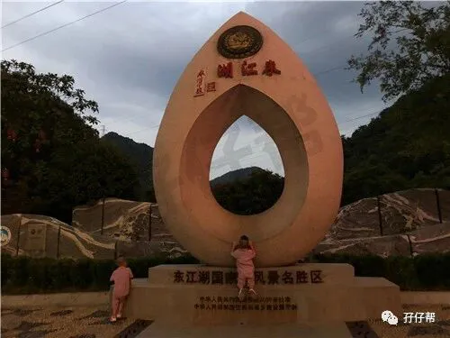
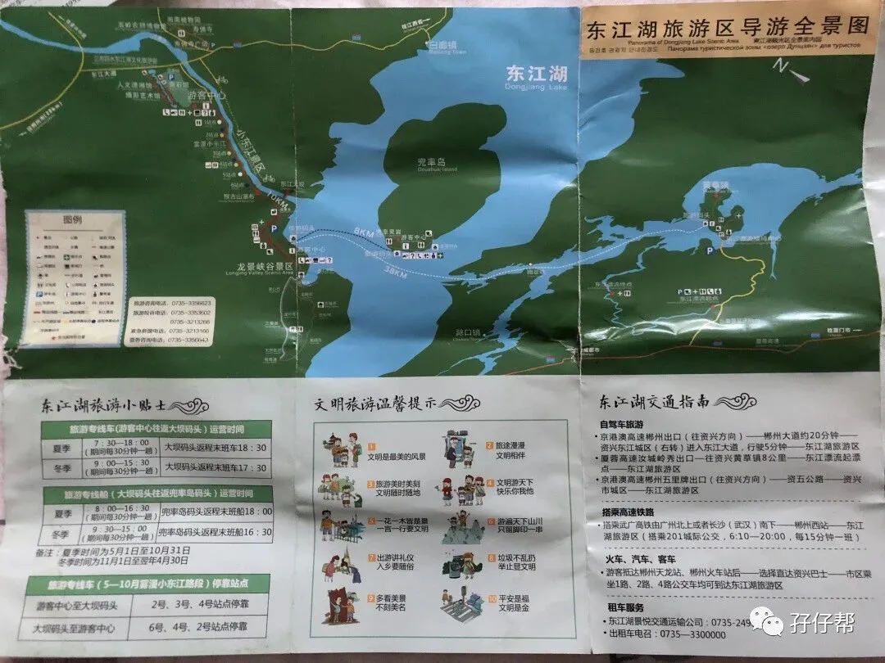
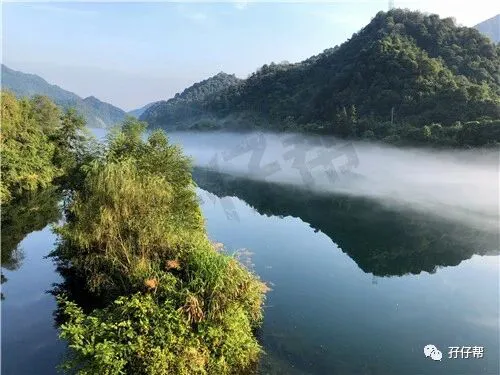
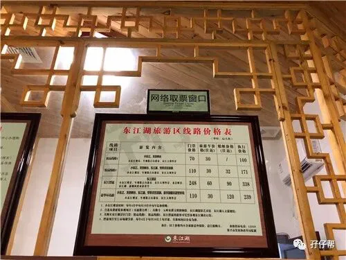
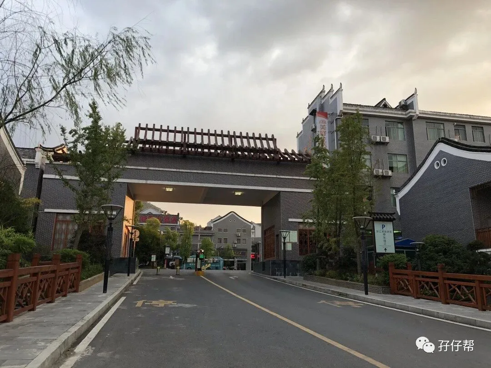
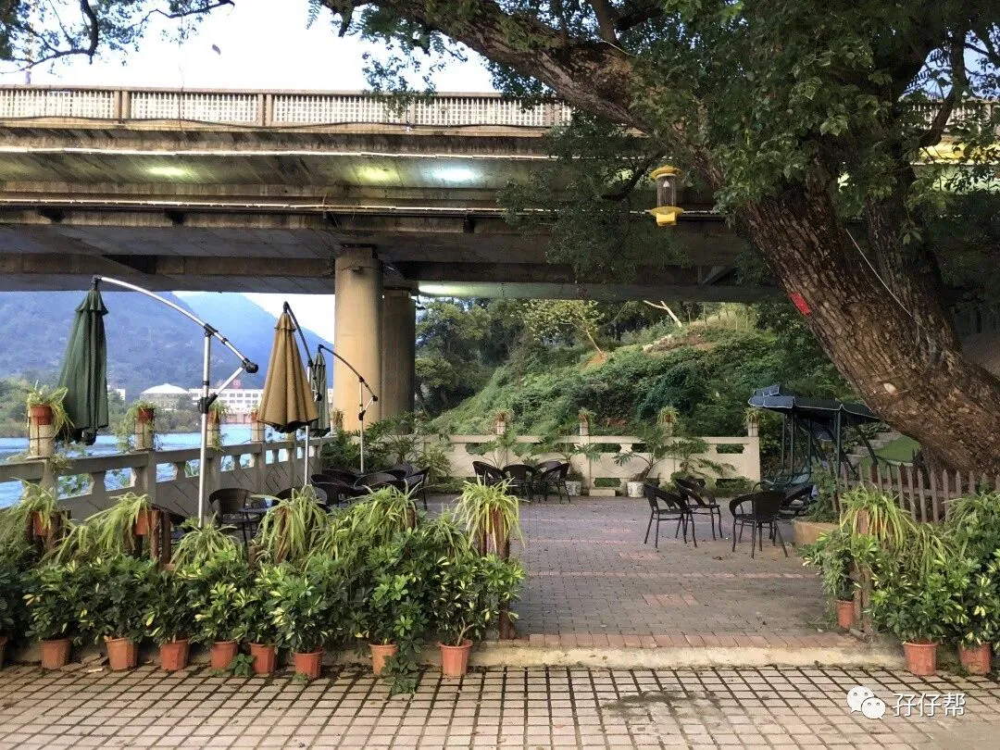
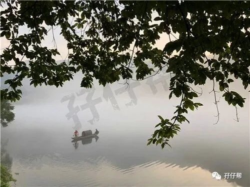
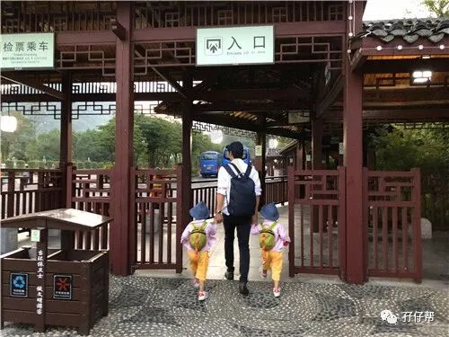
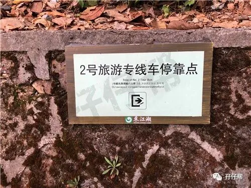
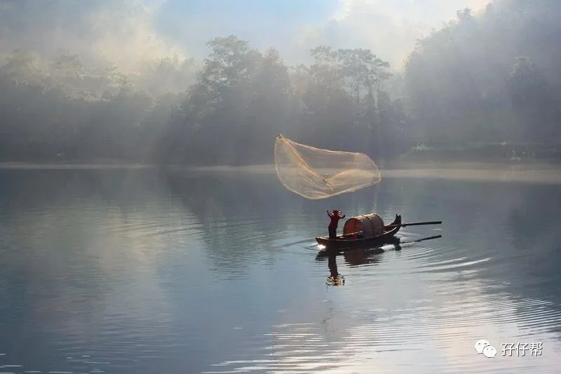
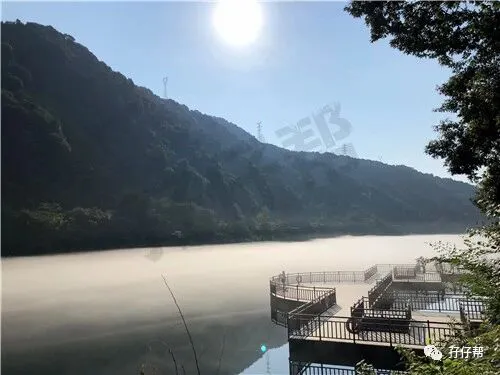

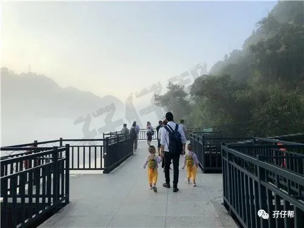
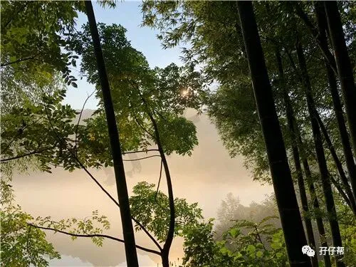
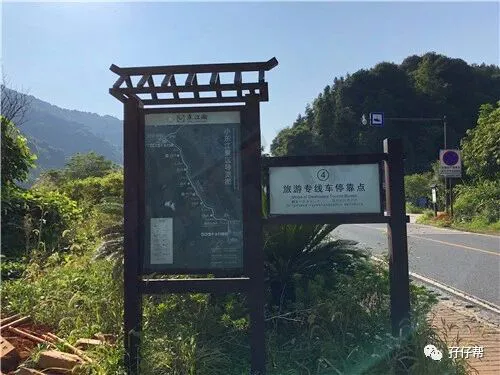
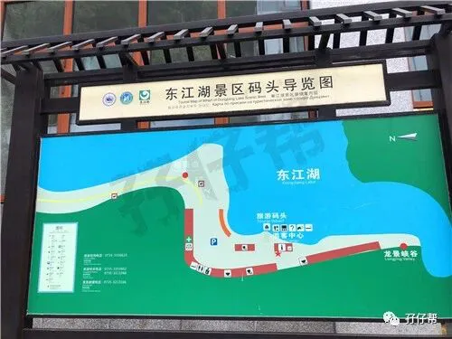
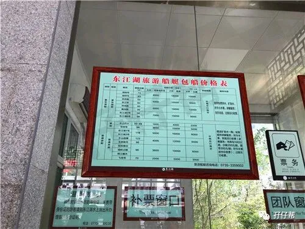
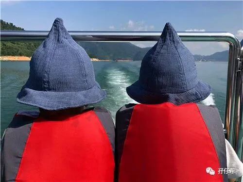
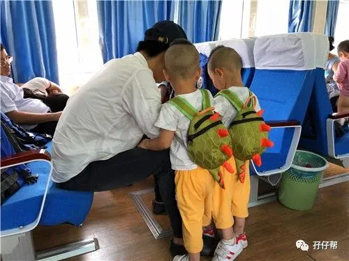
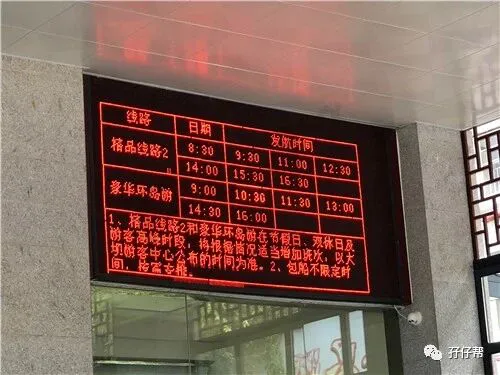
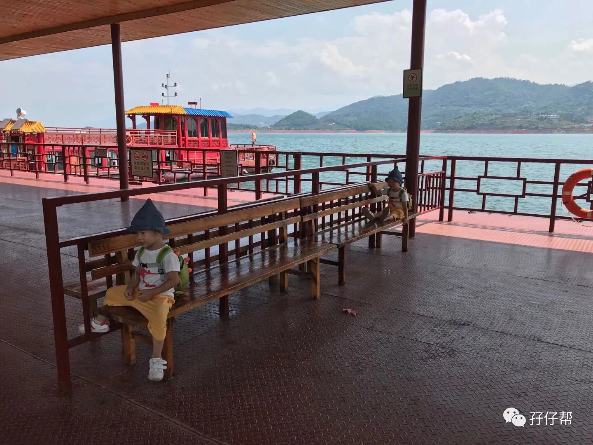
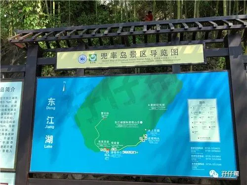
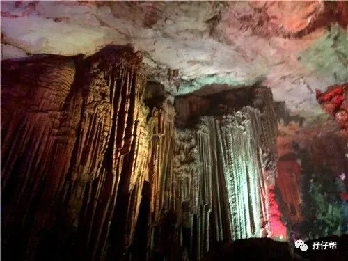
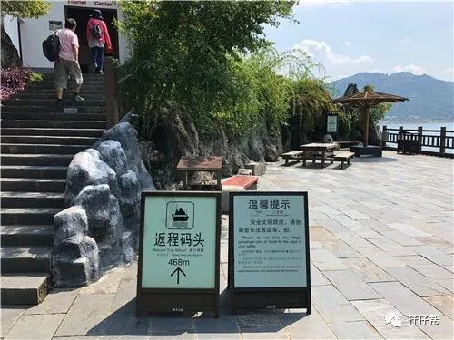
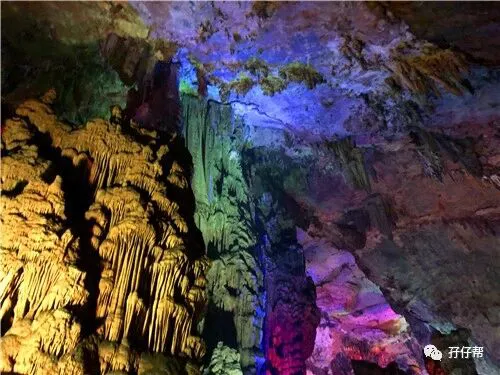
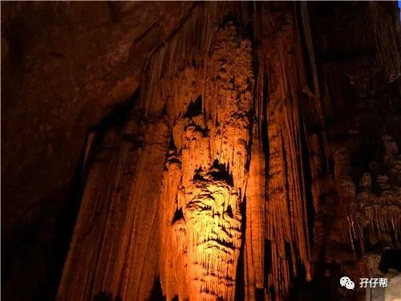
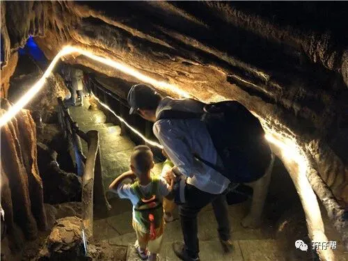
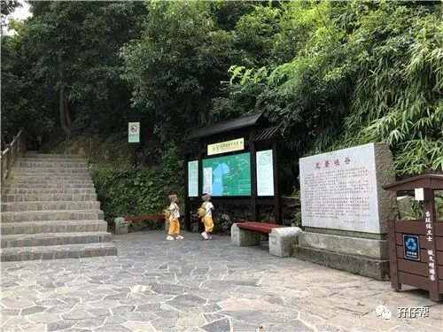
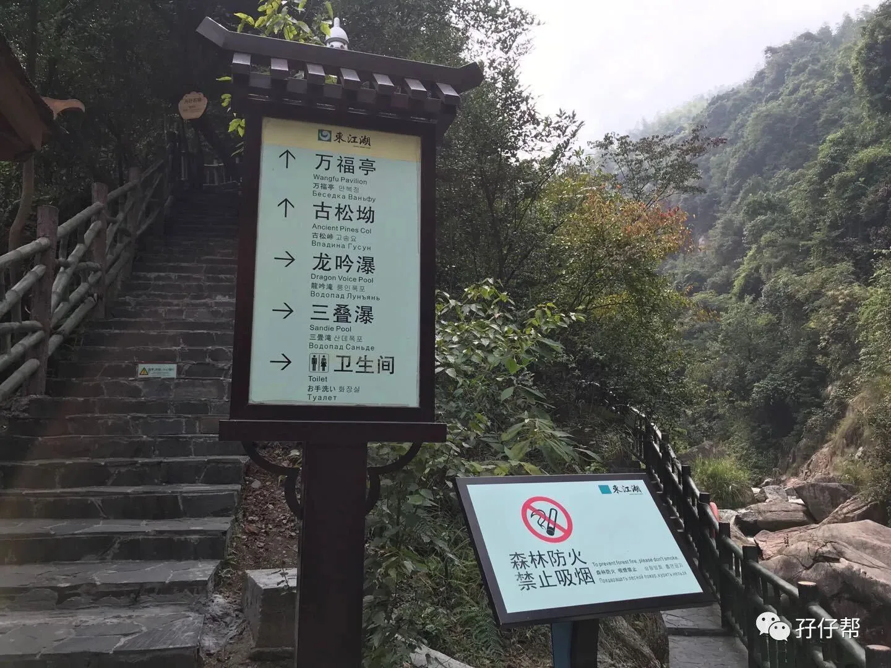
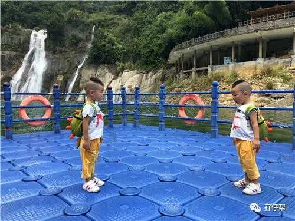
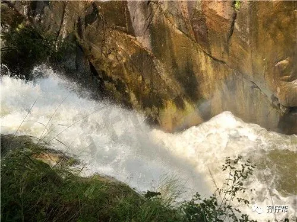
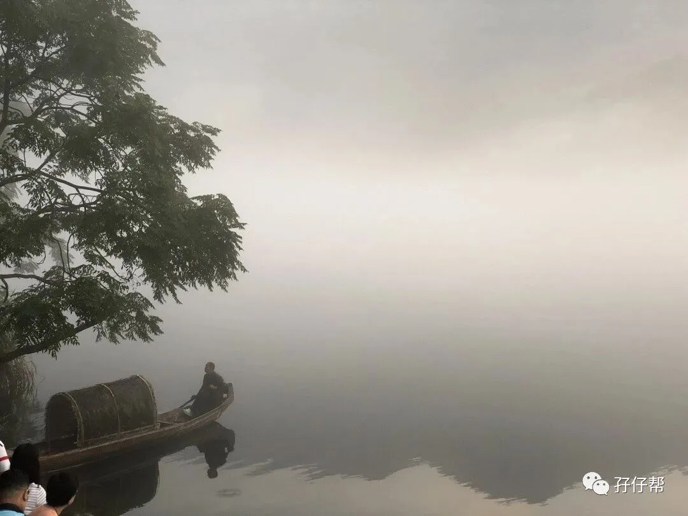